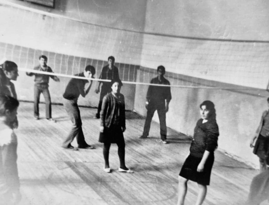
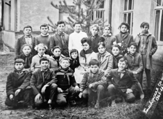
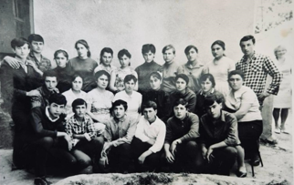

სკოლის ისტორია
რუსების დასახელებიდან 40 წლის შემდეგ 1875 წელს გაიხსნა კერძო პანსიონატი. სკოლის შენახვას საზოგადოება კისრულობდა. სკოლაში ასწავლიდნენ არითმეტიკას, რუსულ ენას, საღვთო სჯულს; სუფევდა ჯოხით დისციპლინა.
კერძო სკოლა ან პანსიონი არსებობდა 1890 წლამდე. 1893-1895 წლებში აშენდა ახალი შენობა. მშენებლობაში აქტიური მონაწილეობა მიიღო თვით ადგილობრივმა მაცხოვრებლებმა.
1922 წლიდან დაწყებითი კლასები გაიხსნა კოჭბაანში, სასადილოში და ვერონაში. აღნიშნული სოფლები შედიოდნენ გომბორის სათემო საბჭოში. ძირითადად მათ ხელმძღვანელობდა გომბორის სკოლა.
გომბორისთვის დიდი მოვლენა იყო 1927 წელს გლეხთა ახალ-გაზრდობითი სკოლის გახსნა. თბილისის საბაზისო განათლების განყოფილების მიერ გაიხსნა ორი კლასი 5 და 6. სკოლა სამხედრო უწყების შენობაში იყო მოთავსებული. სკოლას ჰქონდა ასევე ინტერნატი შორიდან მოსული ბავშვებისთვის. კვებისთვის ეძლეოდათ 7 მანეთი.
1934 წელს პარტიის ცენტრალური კომიტეტის დადგენილებით, სკოლის რეორგანიზაციასთან დაკავშირებით ეს სკოლა გადავიდა შვიდწლედად. 1936 წელს კი შვიდწლედის ბაზაზე გაიხსნა საშუალო სკოლა. მოსწავლეთა პირველი გამოშვება მოხდა 1939 წელს.
თუ სკოლის დაარსების პერიოდში აქ ირიცხებოდა 3 კლასი 27 მოსწავლით, ამჟამად სკოლაში ითვლება 21 კლასი 40 მოსწავლით და 42 მასწავლებლით.
სკოლასთან არსებობს სასკოლო ინტერნატი 60 ბავშვისთვის, რომლებიც უზრუნველყოფილნი არიან ბინით, გათბობა-განათებით, საწოლით, კვებით და სხვ.


